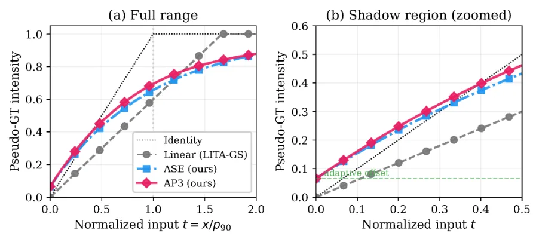
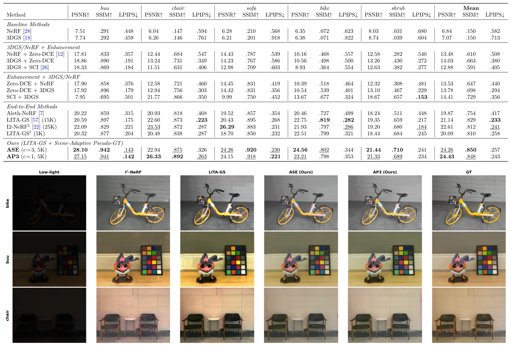

用于低光 3DGS 伪真值生成的场景自适应非线性 tone curveScene-Adaptive Nonlinear Tone Curves for Pseudo Ground-Truth Generation in Low-Light 3D Gaussian Splatting
与夜间/低照度三维重建和机器人巡检数据重建相关，代码可用；主要提升渲染监督质量，不直接解决定位。
一句话工作总结
该方法用场景自适应非线性 tone curve 改善低光 3DGS 伪真值，提升暗光多视图重建质量且不改 backbone。
摘要
低光新视角合成很困难，因为暗光多视图图像含有噪声、结构细节弱且动态范围被压缩。近期 3DGS 方法在没有成对正常光参考时，会生成伪真值图像作为监督目标；但现有方法通常对所有像素使用统一线性增益，容易使亮区过曝，同时暗区增强不足。本文提出一个场景自适应非线性 tone-curve 框架，用非线性伪真值替代线性伪真值。框架包括面向跨场景应用的 percentile-based normalisation、自动黑电平调整的 scene-adaptive offset，以及 Adaptive SoftExp 和 Adaptive Poly3 两类互补曲线。该模块只改变伪真值计算，不改变 3DGS backbone。在 3 个 benchmark、21 个场景上的实验显示，两类曲线均稳定优于线性 baseline，LOM 上 PSNR 最高提升 +4.34 dB，RealX3D 上最高提升 +3.25 dB。
Low-light novel view synthesis is challenging because dark multi-view images contain noise, weak structural detail, and compressed dynamic range. Recent 3D Gaussian Splatting (3DGS) methods address these challenges by generating pseudo ground-truth (pseudo-GT) images as supervision targets when paired normal-light references are unavailable. Existing pseudo-GT methods apply a uniform linear gain to all pixels, which clips bright regions while providing insufficient enhancement in dark regions, limiting reconstruction quality. We observe that nonlinear tone mappings, long established in 2D low-light enhancement, have not been explored for pseudo-GT generation in 3D reconstruction. Accordingly, we propose a scene-adaptive nonlinear tone-curve framework that replaces linear pseudo-GT with nonlinear alternatives. The framework introduces percentile-based normalisation for scene-agnostic curve application, a scene-adaptive offset for automatic black-level adjustment, and two complementary curves: Adaptive SoftExp (ASE), a bounded exponential curve, and Adaptive Poly3 (AP3), a data-driven cubic polynomial. The module changes only the pseudo-GT computation and leaves the 3DGS backbone unchanged. Experiments on three benchmarks covering 21 scenes show that both curves consistently outperform the linear baseline with PSNR improvements up to +4.34 dB on LOM and +3.25 dB on RealX3D. Both curves achieve similar performance despite their different mathematical forms, suggesting the improvement is curve-agnostic. Code is available at https://github.com/lvmingzhe/adaptiveToneCurve
中文解读摘录
- 作者：Matthew Cong, Francis Williams, Jonathan Swartz, Mark Harris, Sanja Fidler, Ken Museth；类别：cs.CV / cs.DC / cs.GR / cs.LG；发布日期：2026-06-10；备注：14 pages, 6 tables, 2 figures；采集 score=13
- 核心问题：3DGS 在真实大场景重建中受单 GPU 显存与算力限制，难以扩大到城市级、街景级细节，同时多卡分布式实现通常要求模型代码显式处理跨设备通信。
- 方法亮点：提出一个 PyTorch backend，把 Gaussian 参数和 splatting operators 通过 CUDA unified memory 与 NVLink 分布到多 GPU；分布发生在 operator 层，模型代码可把多张 GPU 视作聚合 PyTorch device，不需要手写跨设备通信。
- 结果信号：展示了包含 超过 10 亿 Gaussian splats 的城市级重建，数量超过当前 SOTA 25 倍以上，并保持街景级细节。
- 关注价值：这更像 3DGS 系统/基础设施论文，不是 SLAM 算法；但对大尺度机器人地图、城市数字孪生和长序列 Nerfstudio/3DGS 重建非常关键。后续应关注显存分页、NVLink 依赖、训练/渲染吞吐，以及是否能接入已有 COLMAP/SLAM 位姿和地图分块流程。
图表/页面预览

{kind=link}

{kind=link}
